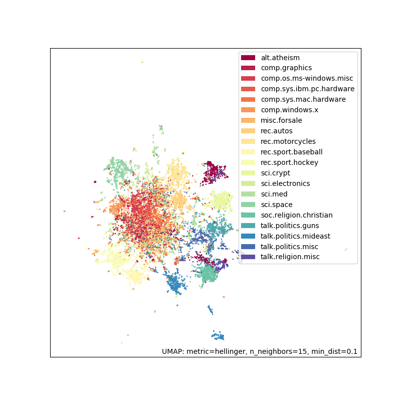

U is for UMAP
Often in data science we have data with multiple dimensions/features that we want to visualize or embed for further analysis. UMAP (Uniform Manifold Approximation and Projection) is one method for doing dimension reduction which will help us with visualizations/embeddings. What do I mean by dimensions? You can think of a dimension as a column in a table or a spreadsheet. For example, let’s say we have a survey about people’s movie preferences. Each person was asked to rate a genre of movies on a scale of 0-5. By looking at the table, we can see that Alice and Mallory have similar tastes. Bob and Trent also seem to like the same genres as well. Since there are 5 different columns/movie genres we say that this data has 5 dimensions.
| Comedy | Sci-Fi | Drama | Horror | Action | |
|---|---|---|---|---|---|
| Alice | 5 | 2 | 4 | 0 | 2 |
| Bob | 3 | 3 | 1 | 5 | 4 |
| Mallory | 4 | 2 | 4 | 1 | 2 |
| Trent | 3 | 3 | 2 | 5 | 5 |
| Wendy | 1 | 5 | 5 | 3 | 3 |
To get a better understanding of this data we want to visualize it. Unfortunately, unless you live in the Interstellar universe, humans can only see in 3 dimensions or less. We want to find a way to represent this data in 2 dimensions where points that are close in the higher dimensional space are close in the lower dimensional space. More concretely, in the new 2D representation, Alice should be close to Mallory and Bob should be close to Trent (because they are similar in the higher dimension). Dimension reduction is a general term for any method that represents high-dimensional data into a lower dimensional space. It’s also known as embedding your data into a lower dimensional space (and I’ll use the terms interchangeably). The two new dimensions of the embedding are related to the original features but are not just a subset. In our movie example it is not just as simple as saying “Comedy and Horror are the important features”. How you combine the original features into a new representation depends on the method of dimension reduction used.
Methods for dimension reduction
There are many methods for doing dimension reduction but here are three popular ones:
- Principal Component Analysis (PCA). This is fast, well understood, and the resulting dimensions are kind of interpretable.
- t-distributed stochastic neighbor embedding (t-SNE). Mostly used for visualization and is used in a wide variety of applications.
- Uniform Manifold Approximation and Projection (UMAP). Developed by Leland McInnes and John Healy (who also made HDBSCAN it has been growing in popularity in recent years. It’s faster than t-SNE and arguably preserves the higher dimensional structure better than t-SNE.
Using UMAP for document embedding/clustering
I’m intending this blog to give you the overall flavour of how dimension reduction methods like UMAP are used. If you’re interested in using UMAP I recommend reading the wonderful getting started guide in the documentation. There’s a great video from Leland McInnes giving a higher level intuition of how it works. If you’re brave (or have a background in topological data analysis) you can dig into the mathematical details of why UMAP works.
As a more concrete example let’s imagine we want to find groups of related forum posts. We can use the 20 newsgroups dataset which is a collection of newsgroup documents across different topics. This example combines a lot of ideas we’ve seen in previous blog posts. If you want code and further explanations to go along with this example, I recommend reading this [document embedding tutorial][https://umap-learn.readthedocs.io/en/latest/document_embedding.html].
We want to find groups of related things, which sounds like we’ll need to use a clustering algorithm. The clustering algorithm can’t just use the raw data on its own, so we’ll need to pass in an embedding. You might recall from “E is for Embeddings” that an embedding requires two things:
- A numeric representation of your data (because we need to do math)
- A distance measure (so we can determine how close/far two points are from one another)
Let’s start with the numeric representation aspect. Forum posts are mostly text so we’ll need to use natural language processing (NLP) techniques. To represent a forum post, we can just count how often a word from a vocabulary appears in that post. This is known as count vectorization and there are a lot more details in “N is for NLP”. This will give us a word-document matrix that could look something like
| the | pizza | baseball | … | CPU | |
|---|---|---|---|---|---|
| Post 1 | 7 | 0 | 2 | … | 0 |
| Post 2 | 15 | 0 | 0 | … | 2 |
| Post 3 | 10 | 1 | 3 | … | 0 |
Each row corresponds to a forum post and each column represents a word in the vocabulary. And the value of each cell in the table is how often that word appeared in a given post. Now we have a numeric representation of our data! Now we just need a way of measuring distance between two posts. For example, it looks like post 1 and post 3 are similar because they are both talking about baseball. The fact that we have a series of counts makes Hellinger distance a good choice. There are more details on Hellinger distance in “J is for Jaccard Metric”.
If we calculate the word-document matrix for the 20 newsgroups dataset we get 34880 unique words over 18846 forum posts! This also ignores all words that occur less than 5 times in the whole corpus. Now as you can imagine this is a sparse matrix (there are a lot of zeroes) because most forum posts don’t have 35000 unique words in them. This means that all of the points are spread far apart. Density based clustering algorithms like [HDBSCAN](../2020-07-01-h-is-for-hdbscan/index.qmd assume that clusters are groups of points that are close together. We need to use dimension reduction to go from 34880 dimensions to a lower dimensional space.
In 34880 dimensions, all the points are spread far apart. However, while 2D is useful for visualization, the points can get smushed together and you can lose information which will help you distinguish groups of posts. Fortunately, UMAP lets you embed into an arbitrary number of dimensions such as 10, 25, or 50. I find it is useful to try clustering on data that has been embedded into 10 or 20 dimensions as you data is no longer sparse, but you still can keep a lot of information about the individual data points. Finding which lower dimensional space works best is mostly a matter of trying different values and seeing what works best. I recommend trying different values like 10, 20, 40 (as compared to 10, 11, 12 etc).
We can also embed the 20 newsgroups data into 2D for visualization and colour the points by the forum topic (e.g. rec.sport.hockey or comp.sys.ibm.pc.hardware). This was done by count vectorizing the data and using Hellinger distance as described.

This embedding looks pretty good. There are groups that you would expect to be together (e.g. the sports related topics). Additionally, the big clump in the middle has topics that are very related (computer hardware). On this embedding (or one in a slightly higher dimension) we can run a clustering algorithm to find all the related posts without having to use the topic labels.
Summary
UMAP is a great tool to have in your data science toolbox for dimension reduction. This blog barely scratches the surface of what it can do but here are some highlights
- UMAP works on a wide variety of data types such as images, text, and tabular data. As long as you have a numeric representation of that data and a meaningful distance measure you can embed it with UMAP.
- The canonical implementation of UMAP is in Python but there are implementations in other languages such as R.
- UMAP is actively developed and there are useful features being added all the time. For example, the latest release makes it easier to align embeddings over time which is incredibly powerful.
- You can also combine dimension reduction methods like PCA and UMAP. For very high dimensional data it is a common workflow to apply PCA first and then UMAP on the embedded data.